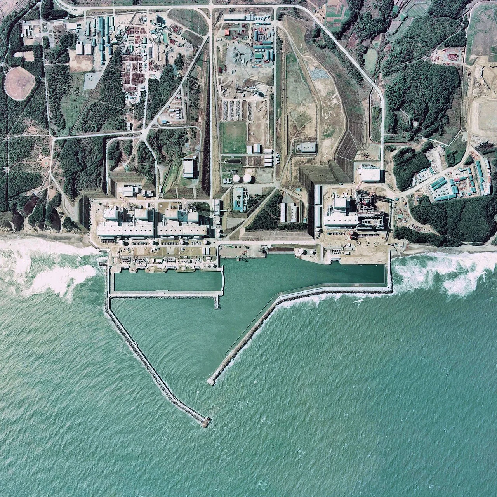
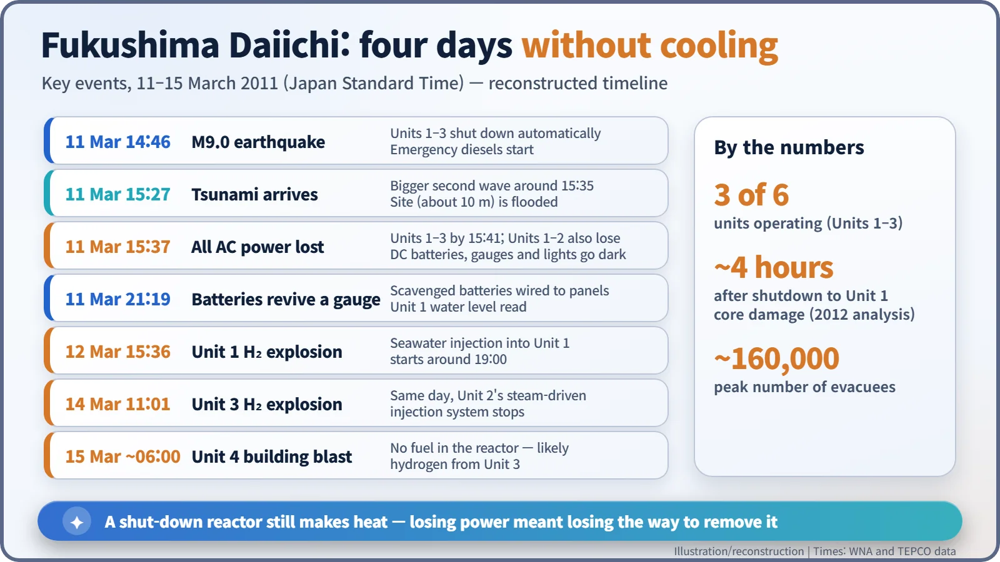
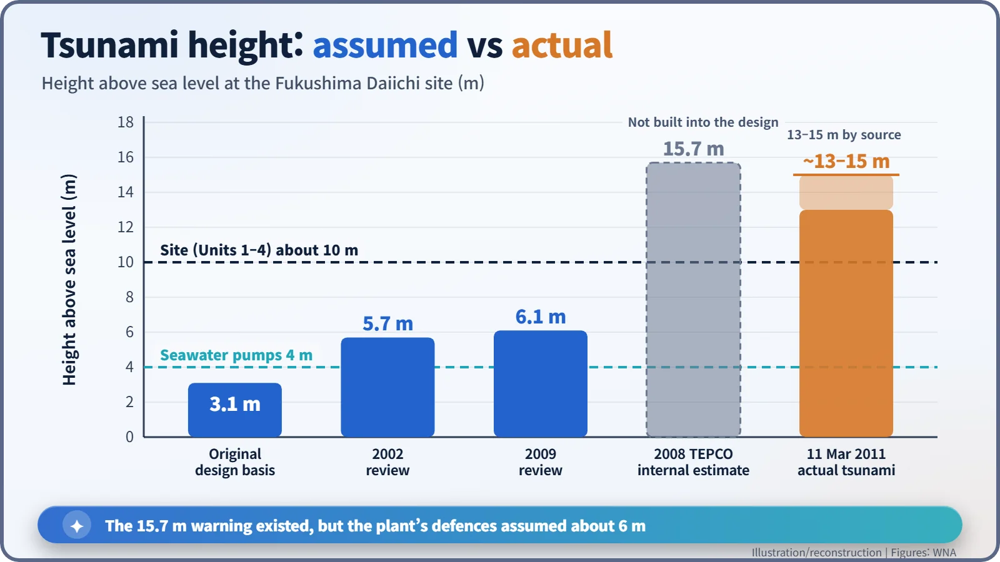
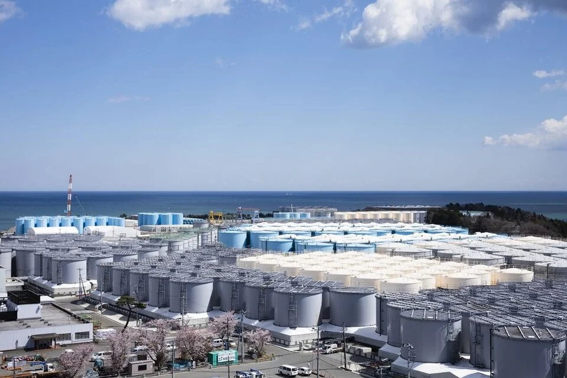

Nuclear History · 281
A Night Held Together by Batteries — The Fukushima Daiichi Accident (2011)
A tsunami higher than the plant had been designed for took away the electricity needed to cool three shut-down reactors, and operators were left wiring batteries to their gauges.
On 11 March 2011 a magnitude 9.0 earthquake and a tsunami of roughly 13–15 m knocked out every source of power at Japan's Fukushima Daiichi plant. Without electricity, the decay heat of three shut-down reactors could not be removed, and all three cores melted. A 2008 internal estimate had already warned of a 15.7 m tsunami.
A night held together by batteries
On the night of 11 March 2011, the shared control room of Units 1 and 2 at Fukushima Daiichi was mostly dark, and operators worked by flashlight. What the recovery team carried in was not high-tech equipment but batteries and cables scrounged from contractors' offices around the site. Working from wiring diagrams, they clipped the batteries onto the instrument panels one by one, and at 21:19 the water level inside the Unit 1 reactor could finally be read. A few batteries were all that stood between the operators and total blindness about a reactor's condition. [2]
Why a stopped reactor is still hot
Insert the control rods and the chain reaction stops, but the reactor does not go cold. Radioactive substances built up in the fuel keep decaying and keep releasing heat. This decay heat has to be carried away by pumping water through the core for days, and the pumps, valves and instruments that do that all run on electricity.
Fukushima Daiichi, run by Tokyo Electric Power Company (TEPCO) on the Pacific coast of Fukushima Prefecture, had six boiling water reactors (BWRs, which boil water directly in the reactor to drive the turbine). That afternoon Units 1–3 were operating; Units 4–6 were shut down for scheduled inspections. Unit 4's entire core, 548 fuel assemblies, had been moved into its spent fuel pool. [1]

The sea arrives 41 minutes later
At 14:46 a magnitude 9.0 earthquake struck. The three operating reactors shut down automatically as designed. Off-site power was lost, so the emergency diesel generators started. So far, the plan was working.
The first tsunami wave arrived at 15:27, about 41 minutes after the quake, and a larger wave followed around 15:35. Water roughly 13–15 m high (figures vary with the source and how height is defined) swept over a site that stood only about 10 m above sea level. Diesel generators and switchgear in the turbine building basements were flooded, and Units 1 and 2 also lost their DC batteries, the last line of defence. With both AC and DC power gone, this was a full station blackout. [1]

Water boils away, hydrogen builds up
With no cooling water going in, decay heat boiled the reactor water away. Later analysis suggests that core damage in Unit 1 began about four hours after shutdown. Exposed zirconium-alloy fuel cladding reacted with hot steam and produced hydrogen, which collected in the upper floors of the reactor buildings and then exploded: Unit 1 at 15:36 on 12 March, Unit 3 at 11:01 on 14 March. On the morning of 15 March the Unit 4 building, whose reactor held no fuel, was also wrecked by an explosion, most likely from hydrogen that had flowed over from Unit 3. In the end, the cores of all three operating units melted.
The site superintendent, Masao Yoshida (1955–2013), and his staff kept going with fire engines and improvised hoses, pumping seawater into the reactors. Investigations later confirmed that when word came on the evening of 12 March to halt the seawater injection into Unit 1, the injection actually continued. On 12 April the accident was raised to Level 7, the top of the International Nuclear and Radiological Event Scale, and the number of evacuees peaked at about 160,000. [1]
Was it really "beyond imagination"?
The phrase heard most after the accident was sōteigai, "beyond what was assumed". Line up the numbers, though, and the story changes. The design-basis tsunami was 3.1 m when the plant was licensed, raised to 5.7 m in 2002 and 6.1 m in 2009. Yet in 2008 a TEPCO internal calculation had found that a tsunami of 15.7 m was possible at the site, and the plant was not upgraded to match. [1]

In July 2012 the National Diet of Japan's Fukushima Nuclear Accident Independent Investigation Commission put it bluntly: "It was a profoundly manmade disaster – that could and should have been foreseen and prevented." [3]
Three ways to count the dead
The human toll has to be separated into distinct categories.
| Category | Figure | Source and date |
|---|---|---|
| Deaths and missing in the earthquake and tsunami | About 18,000–19,000+ | Varies with how deaths are counted |
| Disaster-related deaths in Fukushima Prefecture (evacuation stress, interrupted care, etc.; includes earthquake and tsunami evacuees) | 2,350 | Reconstruction Agency, as of 31 Dec 2025 |
| Health effects directly attributable to radiation among residents | None documented; none expected to be discernible | UNSCEAR 2020/2021 Report, March 2021 |
The disaster-related figure also includes people displaced by the earthquake and tsunami, so the share due to the nuclear evacuation alone cannot be cleanly separated. [4]
On radiation, UNSCEAR concluded in March 2021 that no adverse health effects among Fukushima residents had been documented that are directly attributable to radiation exposure from the accident, and that none are expected to be discernible in future. It attributed the large number of thyroid cancers found in children to sensitive ultrasound screening carried out on a massive scale. Six workers received more than 250 mSv. In 2018 the Japanese government recognised one worker's lung cancer as an occupational disease; whether radiation actually caused it remains debated. [1] [5]
A clean-up that is not over
The accident happened in 2011, but the clean-up continues. After the IAEA concluded that the plan met international safety standards, treated water from the ALPS purification system began to be released into the sea on 24 August 2023. Some countries, including China, and some fishing organisations remain opposed. [1]

About 880 tonnes of melted and resolidified fuel debris are thought to remain in Units 1–3. Only small samples have come out of Unit 2: about 0.7 g in November 2024 and a second sample in April 2025. Large-scale removal has slipped to 2037 at the earliest (as of November 2026). [6]
If Chernobyl began with flaws in reactor design and operation, Fukushima was an accident in which a shut-down reactor lost the electricity it needed to stay cool. The night the operators clung to a few batteries leaves one question for every nuclear plant: can the heat be removed no matter what?